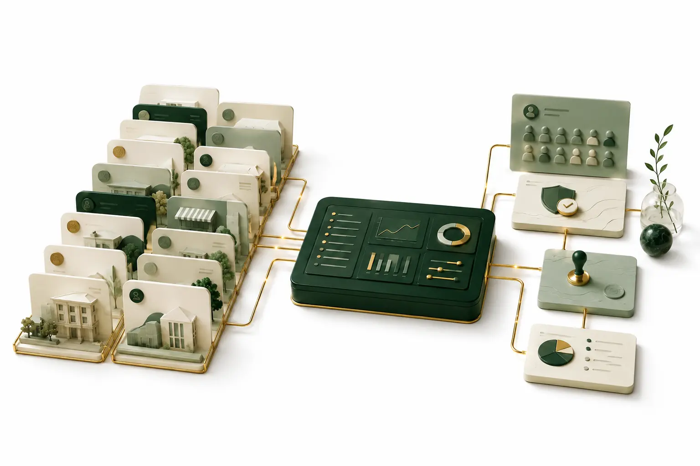

Payroll Bureaux
Manage multiple employers, payrolls, frequencies and deadlines without losing sight of the wider operation.
Whether you manage payroll for multiple clients or run payroll for your own organisation, Oceans Pay gives you the processing capability, visibility and control to manage the entire operation from one connected platform.

Oceans Pay is designed around both.
Manage multiple employers, payrolls, frequencies and deadlines without losing sight of the wider operation.
Manage your organisation's payroll with clear processes, controlled access and visibility across every pay run.
The challenge of bureau payroll isn't simply processing another company. It's knowing where every client payroll stands and where your team needs to focus next.
Oceans Pay brings payroll activity across your client portfolio into one central view.
Identify payrolls ready to progress.
Keep outstanding payroll activity visible.
Surface exceptions and payrolls requiring review.
Maintain visibility across completed payroll activity.
Use consistent workflows and central controls across your payroll portfolio while retaining the flexibility required for individual clients.
Your team shouldn't have to open every payroll to discover whether something needs attention.
Oceans Pay helps bring the payrolls requiring action to the surface so processors can focus their time where it is actually needed.
Explore Bureau CapabilitiesOceans Pay gives employers one environment for managing payroll activity, employee pay information, review, compliance and reporting.
Payroll often involves payroll professionals, finance teams, managers and other stakeholders with different responsibilities.
Oceans Pay gives organisations greater control over who can access payroll information and the actions available to them.
Explore Employer CapabilitiesStructure access around responsibility.
Keep appropriate control over payroll progression.
Maintain a clearer record of payroll activity.
Give relevant teams access to the payroll information they need.
Surface unusual activity, important changes and payroll information requiring review.
Reduce repetitive administration through structured workflows, bulk actions and automated activity.
Support PAYE, National Insurance, RTI, statutory payments and workplace pensions within the payroll process.
Keep payroll results, operational status and relevant information accessible from the same environment.
Manage users, permissions and payroll responsibilities.
Bring existing payroll information into Oceans Pay through structured mapping, validation and review.
Central visibility. Multi-company control. Bulk activity. Team workflows.
See Oceans Pay for BureauxPayroll processing. Validation. Approvals. Compliance. Reporting.
See Oceans Pay for EmployersTell us whether you manage payroll for clients or your own organisation and we'll focus the demonstration around the workflows most relevant to your team.